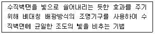
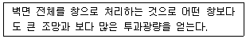
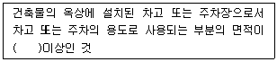
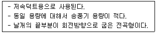
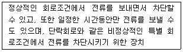
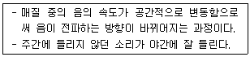
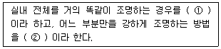

실내건축기사(구) (2013-03-10 기출문제)
1과목: 실내디자인론
1. 실내디자인의 프로젝트 분류와 대상의 연결이 옳지 않은 것은?
- 업무공간 – 관공서, 은행
- 전시공간 – 박물관, 기념관
- 의료공간 – 종합병원 , 재활시설
- 문화공간 – 도서관, 클럽하우스
(정답률: 82%)

2. 유닛 가구(unit furniture)에 관한 설명으로 옳은 것은?
- 규격화된 단일가구로 다목적으로 사용이 불가능하다.
- 가구의 형태를 변화시킬 수 없으며 고정적인 성격을 갖는다.
- 특정한 사용목적이나 많은 물품을 수납하기 위해 건축화된 가구를 의미한다.
- 공간의 조건에 맞도록 조합시킬 수 있으므로 공간의 이용효율을 높일 수 있다.
(정답률: 78%)
3. 르 꼬르뷔지에의 모듈러(Modulor)와 가장 관계가 깊은 디자인 원리는?
- 리듬
- 강조
- 조화
- 비례
(정답률: 83%)
4. 질감(texture)에 관한 설명으로 옳지 않은 것은?
- 촉각 또는 시각으로 지각할 수 있는 어떤 물체 표면상의 특징을 말한다.
- 질감의 선택에서 중요한 것은 스케일, 빛의 반사와 흡수, 촉감 등이다.
- 거친 질감은 가볍고 환한 느낌을 주어 좁은 실내 공간을 넓게 느껴지게 한다.
- 질감은 시각적 환경에서 여러 종류의 물체들을 구분하는데 큰 도움을 줄 수 있는 중요한 특성 가운데 하나이다.
(정답률: 89%)
5. 다음 중 죠닝(zoning)에서 죤(zone)의 설정시 고려할 사항과 가장 거리가 먼 것은?
- 사용빈도
- 사용시간
- 사용행위
- 사용재료
(정답률: 82%)
6. 3차원 입체로서의 공간을 가장 적절하게 표현한 용어는?
- 점과 선
- 기둥과 보
- 볼륨과 매스
- 질감과 색채
(정답률: 79%)
7. 사무실의 개방식 배치의 한 형식으로 업무와 환경을 경영관리 및 환경적 측면에서 개선한 것으로 사무 업무를 사람의 흐름과 정보의 흐름을 매체로 효율적인 네트워크가 되도록 배치하는 방법은?
- 죠닝
- 매트릭스
- 버블다이어그램
- 오피스 랜드스케이프
(정답률: 89%)
8. 쇼륨의 공간구성은 상품전시공간, 상담공간, 어트랙션(attraction)공간, 서비스공간, 통로공간, 출입구를 포함한 파사드로 구성되어 진다. 다음 중 어트랙션(attraction)공간에 관한 설명으로 가장 알맞은 것은?
- 진열되는 상품을 디스플레이하기 위한 공간으로 진열대와 진열기구, 연출기구 등이 필요하다.
- 입구에서 관람객의 시선을 집중시켜 쇼륨의 내부로 관람객을 유인하는 역할을 한다.
- 전시상품에 대한 정보를 알리거나 관람자를 안내하기 위한 공간이다.
- 구매상담을 도와주고 관람자를 통제하는 공간이다.
(정답률: 79%)
9. 실내공간의 동선에 관한 설명으로 옳지 않은 것은?
- 동선은 사람이나 물건이 움직이는 선을 연결한 것을 말한다.
- 동선은 성격이 다른 동선일지라도 교차시켜서 계획하는 것이 바람직하다.
- 동선은 짧으면 효율적이지만 공간의 성격에 따라 길게 처리하기도 한다.
- 동선은 빈도, 속도, 하중의 3요소를 가지며, 이들 요소의 정도에 따라 거리의 장단, 폭의 대소가 결정되어 진다.
(정답률: 88%)
10. 버내큘러 디자인에 관한 설명으로 옳지 않은 것은?
- 디자인 과정이 다소 불투명하고 익명성을 갖는다.
- 디자인의 기능성 보다는 미적 측면을 강조한 디자인이다.
- 문화적인 사물에 나타난 그 지역의 민속적 특성을 일컫는 표현이다.
- 전통적인 도구(도끼, 망치 등), 철물류(경첩, 좌물쇠 등), 가사도구 등도 해당된다.
(정답률: 73%)
11. 리듬의 원리에 해당하지 않는 것은?
- 강조
- 변이
- 반복
- 방사
(정답률: 57%)
12. 다음 중 가시성의 결정 요소와 가장 거리가 먼 것은?
- 대상물의 크기
- 주변과의 대비
- 대상물의 밝기
- 대상물의 실제 무게
(정답률: 89%)
13. 실내디자인의 영역에 관한 설명으로 옳지 않은 것은?
- 사무공간이란 사무효율성과 경제성, 쾌적성 등을 고려한 공간을 계획하는 것으로 연구소, 호텔 등이 이에 속한다.
- 주거공간이란 의식주를 해결하는 주생활 공간으로 취침, 식사 등의 생활행위를 공간에 대응하는 것이다.
- 상업공간이란 실내공간을 창조적으로 계획하여 판매신장을 높이는 공간을 말하며 백화점, 식당 등이 이에 속한다.
- 전시공간이란 기업의 홍보, 판매촉진을 위한 영리전시 공간과 교육, 문화적 사고개발을 위한 비영리전시공간으로 나뉜다.
(정답률: 82%)
14. 형태(form)의 지각심리에 관한 설명으로 옳지 않은 것은?
- 연속성은 공동운명의 법칙이라고 한다.
- 반전도형(반전도형)은 루빈의 항아리로 설명되며, 배경과 도형이 동시에 지각되는 법칙이다.
- 유사성은 비슷한 형태, 색채, 규모, 질감, 명암, 패턴의 그룹을 하나의 그룹으로 지각하려는 경향을 말한다.
- 폐쇄성은 불완전한 형이나 그룹을 폐쇄하거나 완전한 하나의 형, 혹은 그룹으로 완성하여 지각되는 법칙을 말한다.
(정답률: 52%)
15. 주택의 현관에 관한 설명으로 옳지 않은 것은?
- 거실이나 침실의 내부와 직접 연결되도록 배치한다.
- 복도나 계단실 같은 연결 통로에 근접시켜 배치한다.
- 현관의 위치는 도로와의 관계, 대지의 형태 등에 의해 결정된다.
- 바닥 마감재로는 내수성이 강한 석재, 타일, 인조석 등이 바람직히다.
(정답률: 88%)
16. 다음 설명에 알맞은 조명의 연출기법은?

- 강조기법(high lighting)
- 글레이징(glazing) 기법
- 월워싱(wall washing) 기법
- 빔플레이(beam play) 기법
(정답률: 86%)
17. 주거공간을 개인공간, 사회공간, 노동공간, 보건·위생공간 등으로 구분할 때, 다음 중 사회공간에 속하는 것은?
- 현관, 욕실
- 침실, 욕실
- 서재, 침실
- 거실, 식당
(정답률: 88%)
18. 상품 진열계획에서 고객에게 가장 편한 진열높이를 말하는 골든 스페이스(golden space)의 범위는?
- 400~850mm
- 850~1250mm
- 1250~1500mm
- 1500~1800mm
(정답률: 86%)
19. 건축화 조명에 관한 설명으로 옳지 않은 것은?
- 별도의 조명기구를 사용하지 않은 에너지 절약형 조명이다.
- 간접조명방식으로는 코브(cove)조명, 캐노피(canopy)조명 등이 있다.
- 건축 구조체의 일부분이나 구조적인 요소를 이용하여 조명하는 방식이다.
- 코니스(cornice)조명은 벽면의 상부에 위치하여 모든 빛이 아래로 직사하도록 하는 조명 방식이다.
(정답률: 78%)
20. 다음 설명에 알맞은 창의 종류는?

- 윈도우 월
- 보우 윈도우
- 베이 윈도우
- 픽쳐 윈도우
(정답률: 77%)
2과목: 색채학
21. 동일 색상 내에서 톤의 차이를 두어 배색하는 방법이며 명도 그라데이션을 주로 활요하는 배색기법은?
- 톤온톤(Tone on Tone) 배색
- 톤인톤(Tone in Tone) 배색
- 리피티션(Repetition) 배색
- 세퍼레이션(Separation) 배색
(정답률: 75%)
22. 다음 배색에서 명도차가 가장 큰 배색은?
- 빨강, 파랑
- 노랑, 검정
- 빨강, 녹색
- 노랑, 주황
(정답률: 82%)
23. 같은 형태(形態), 같은 면적에서 그 크기가 가장 크게 보이는 색은? (단, 그 색이 동일한 배경색 위에 있을 때)
- 고명도의 청색(blue)
- 고명도의 녹색(green)
- 고명도의 황색(yellow)
- 고명도의 자색(purple)
(정답률: 82%)
24. 다음 중 색의 채도가 가장 높은 색상은?
- 5R4/14
- 5G5/10
- 5B6/8
- 5P3/12
(정답률: 84%)
25. 비렌(Birren)의 색과 형의 연결로 틀린 것은?
- 빨강색 – 정사각형
- 노랑색 – 삼각형
- 파랑색 – 오각형
- 주황색 – 직사각형
(정답률: 79%)
26. 스컬러 모멘트(scalar moment)라는 면적 비례를 적용하여 조화론을 전개한 학자는?
- 오스트발트
- 먼셀
- 문·스펜서
- 비렌
(정답률: 66%)
27. 오스트발트(Ostwald) 조화론의 등색상삼각형의 조화가 아닌 것은?
- 등순색계열의 조화
- 등백색계열의 조화
- 등흑색계열의 조화
- 등명도계열의 조화
(정답률: 80%)
28. 다음 빛의 혼합 중 틀린 것은?
- Blue + Green = Cyan
- Green + Red = Yellow
- Blue + Red = Magenta
- Blue + Green + Red = Black
(정답률: 80%)
29. 컬러 TV의 화상의 혼색방법은?
- 병치가법혼색
- 색광혼합
- 색료혼합
- 감법혼합
(정답률: 77%)
30. 우리 눈의 망막상에서 어두운 곳에서는 약한 광선을 받아들이며 색상은 보이지 않고 명암만을 판별하는 시세포는?
- 추상체
- 간상체
- 수정체
- 홍채
(정답률: 79%)
31. 색을 다른 말로 표현할 때 적당하지 않는 것은?
- 빛깔
- 색상
- 컬러
- 색깔
(정답률: 41%)
32. 먼셀(Munsell) 표색계에 기본을 둔 표준색표의 구성에서 R의 경우 1R, 2R, 3R, ··· 10R 로 10등분하여 나눈다. 다음 중 5R에 해당되는 색은?
- 연지에 가까운 색
- 다홍색
- 중간밝기의 빨강색
- 빨강의 순색
(정답률: 74%)
33. 물체를 조명하는 광원색의 성질(분광분포)에 따라서 같은 물체라도 색이 달라져 보이게 되는 것은?
- 명시성(明視性)
- 연색성(演色性)
- 메티메리즘
- 프르킨예 현상
(정답률: 65%)
34. 다음 색에 대한 설명 중 틀린 것은?
- 색의 3속성은 색상, 명도, 채도이다.
- 섞어서 만들 수 없는 색을 기본색이라고 한다.
- 물체색은 빛에 관계없이 고유한 것이다.
- 감산혼합에 있어 보색간의 혼합은 검정에 가까운 회색을 나타낸다.
(정답률: 71%)
35. 먼셀 색채조화의 원리로 틀린 것은?
- 명도는 같으나 채도가 다른 반대색끼리는 강한 채도에 넓은 면적을 주면 조화된다.
- 채도가 같고 명도가 다른 반대색끼리는 회색척도에 관하여 정연한 간격을 주면 조화된다.
- 중간 채도의 반대색끼리는 중간 회색 N5에서 연속성이 있으며, 같은 넓이로 배합하면 조화된다.
- 명도와 채도가 모두 다른 반대색끼리는 회색척도에 준하여 정연한 간격을 주면 조화된다.
(정답률: 62%)
36. 다음 중 빨강 사과를 빨갛게 느끼는 이유로 옳은 것은?
- 사과 표면에 빛 중 빨강 파장은 흡수, 나머지는 반사하기 때문
- 사과 표면에 비친 빛 중 빨강 파장은 투과, 나머지는 굴절하기 때문
- 사과 표면에 비친 빛 중 빨강 파장은 반사, 나머지는 흡수하기 때문
- 사과 표면에 비친 빛 중 빨강 파장은 굴절, 나머지는 반사하기 때문
(정답률: 81%)
37. 어두워지기 시작하는 저녁 무럽에 적색계의 색보다 청색계의 색이 더 밝아 보이는 지각현상은?
- 항상성
- 유목효과
- 베졸트효과
- 프르긴예 현상
(정답률: 82%)
38. 다음 관용색명 중 동물의 이름과 관련된 색명은?
- prussian blue
- peach
- cobalt blue
- salmon pink
(정답률: 68%)
39. 영국의 과학자 영(T. Young 1773-1829)과 헬름홀즈가 발표한 색각의 기본이 되는 3가지 색은?
- 적, 청, 황
- 적, 황, 녹
- 적, 청, 녹
- 적, 청, 흑
(정답률: 72%)
40. 다음 색 중 보색 관계가 아닌 것은?
- 초록(Green) - 마젠타(Magenta)
- 빨강(Red) – 시안(Cyan)
- 노랑(Yellow) – 파랑(Blue)
- 마젠타(Magenta) - 시안(Cyan)
(정답률: 62%)
3과목: 인간공학
41. 다음 중 소음에 노출되었을 때의 생리적 영향과 가장 거리가 먼 것은?
- 말초현관 확장
- 혈압 상승
- 호흡수의 증가
- 신진대사의 증가
(정답률: 60%)
42. 다음 중 소리의 특성과 가장 거리가 먼 것은?
- 굴절
- 성장
- 회절
- 간섭
(정답률: 79%)
43. 귀의 구조 중에서 외이도와 중이의 경계 부위에 위치하며, 0.5 ~ 0.9cm2의 넓이를 가지며 소리 압력의 변화에 따라 진동하는 것은?
- 난원창
- 와우
- 반규관
- 고막
(정답률: 77%)
44. 다음 중 소음수준의 측정단위로 표시되는 것은?
- dB(A)
- dB(C)
- dB(F)
- dB(L)
(정답률: 56%)
45. 어떤 의미를 전달하기 위한 부호의 유형 중 교통표지판의 삼각형은 주의를, 사각형은 안내를 나타내듯 부호가 이미 고안되어 있으며 이를 배워야 하는 부호를 무엇이라 하는가?
- 묘사적 부호
- 추상적 부호
- 임의적 부호
- 시각적 부호
(정답률: 50%)
46. 여러 개의 정량적 표시장치를 쌍태 점검에 사용할 경우 일반적으로 정상 상태의 지침 방향은 몇 시 방향으로 정렬하는 것이 가장 정확하게 인식할 수 있겠는가?
- 2시
- 4시
- 8시
- 12시
(정답률: 86%)
47. 다음 중 문자의 크기에 있어 흰 종이에 검은 문자를 쓸 때 두께와 높이의 비율로 가장 적절한 것은?
- 1 : 2
- 1 : 4
- 1 : 6
- 1 : 9
(정답률: 64%)
48. 다음 중 밝은 곳에서 어두운 곳에 적응하기 위한 눈의 암순응을 촉진하기 위해 사용하는 색안경으로 가장 적합한 것은?
- 노란색 안경
- 빨간색 안경
- 초록색 안경
- 파란색 안경
(정답률: 54%)
49. 다음 중 인체측정자료를 이용하여 설계할 때 응용원칙과 적용의 연결이 적절하지 않은 것은?
- 최대치 – 문의 높이
- 조절식 – 의자의 높이
- 최소치 – 그네의 줄 강도
- 최소치 – 버스의 손잡이 높이
(정답률: 76%)
50. 다음 중 일반적인 입식 작업대의 높이에 관한 설명으로 옳은 것은?
- 거친 작업일수록 작업대의 높이가 높은 것이 좋다.
- 섬세한 작업일수록 작업대의 높이가 높은 것이 좋다.
- 모든 작업대의 높이가 높은 것이 낮은 것보다 좋다.
- 모든 작업대의 높이가 낮은 것이 높은 것보다 좋다.
(정답률: 78%)
51. 실현 가능성이 같은 2개의 대안 중 하나가 명시되었을 때 얻을 수 있는 정보량은 얼마인가?
- 1bit
- 2bit
- 4bit
- 8bit
(정답률: 49%)
52. 다음 중 눈과 대상물이 이루는 시각이 2분(‘)인 사람의 시력(최소가분시력)으로 옳은 것은?
- 0.⑤
- 0.5
- 1.5
- 2.0
(정답률: 81%)
53. 다음 중 동일한 짐을 나르는 방법에 따른 에너지 소비량(산소소비량)이 가장 많은 것은?
- 등을 이용하는 방법
- 배낭을 이용하는 방법
- 목도를 이용하는 방법
- 양손을 이용하는 방법
(정답률: 87%)
54. 사람이 자동차나 비행기를 조종할 때 긴장감의 정도를 파악하기 위하여 심박수, 호흡률, 뇌 전위, 혈압 등을 조사하는데, 이는 다음 중 어느 것을 지표로서 이용하는 경우에 해당되는가?
- 심리적 변화
- 육체적 변화
- 생리적 변화
- 정신적 변화
(정답률: 64%)
55. 표적 물체나 관측자 또는 모두가 움직이는 경우에는 시력의 역치(threshold)가 감소하게 되는데, 다음 중 이러한 상황에서의 시식별 능력을 무엇이라 하는가?
- 버니어 시력(vernier acuity)
- 입체 시력(stereoscopic acuity)
- 동 시력(dynamic visual acuity)
- 최소가분 시력(minimum separable acuity)
(정답률: 63%)
56. 다음 중 인간공학적 의자 디자인에 있어 고려사항으로 가장 거리가 먼 것은?
- 사람의 앉은 키
- 좌면의 높이와 폭 및 깊이
- 좌면에서의 무게, 부하 분포
- 동체의 안정성과 위치변동의 편리성
(정답률: 57%)
57. 다음 중 신체부위의 유형에서 팔꿈치를 굽히는 것과 같이 신체 부위 간의 각도가 감소하는 동작을 무엇이라 하는가?
- 굴곡(flexion)
- 신전(extention)
- 하향(pronation)
- 외전(adduction)
(정답률: 72%)
58. 다음 중 색각(色覺)을 변화시키는 외적 조건에 해당되지 않은 것은?
- 조명, 밝기
- 서리, 안개
- 거리, 배경
- 위치, 각도
(정답률: 49%)
59. 다음 중 시각적 점멸 융합 주파수(VFF)에 영향을 주는 변수들을 대한 설명으로 옳은 것은?
- 연습의 효과는 아주 크다.
- 휘도만 같으면 색은 VFF에 영향을 주지 않는다.
- VFF는 조명 강도의 대수치에 지수적으로 비례한다.
- 시표와 주변의 휘도와 같을 때에 VFF는 최소가 된다.
(정답률: 38%)
60. 다음 중 시각적 암호의 사용에 있어 숫자, 색, 영문자, 구성 암호를 이용할 경우 주어진 임무(종류의 판별)에 대한 성능이 가장 우수한 것부터 낮은 순으로 올바르게 나열한 것은?
- 색 ＞ 숫자 ＞ 영문자 ＞ 구성암호
- 숫자 ＞ 색 ＞ 영문자 ＞ 구성암호
- 영문자 ＞ 색 ＞ 숫자 ＞ 구성암호
- 구성암호 ＞ 색 ＞ 숫자 ＞ 영문자
(정답률: 49%)
4과목: 건축재료
61. 점토 반죽에 샤모테를 첨가하여 사용하는 경우가 있는데 이 샤모테의 사용목적은?
- 가소성 조절용
- 용융성 조절용
- 경화시간 조절용
- 강도 조절용
(정답률: 71%)
62. 목재의 신축에 대한 설명 중 옳은 것은?
- 동일 나뭇결에서 심재는 변재보다 신축이 크다.
- 섬유포화점 이상에서는 함수율에 따른 신축 변화가 크다.
- 일반적으로 곧을결폭보다 널결폭이 신축의 정도가 크다.
- 신축의 정도는 수종과는 상관없이 일정하다.
(정답률: 60%)
63. 고로슬래그 분말을 시멘트 혼화재로 사용한 콘크리트의 성질에 대한 설명 중 옳지 않은 것은?
- 초기강도는 낮지만 슬래그의 잠재 수경성 때문에 장기강도는 크다.
- 해수, 하수 등의 화학적 침식에 대한 저항성이 크다.
- 슬래그 수화에 의한 포졸란 반응으로 공극 충전효과 및 알칼리 골재반응 억제효과가 크다.
- 슬래그를 함유하고 있어 건조수축에 대한 저항성이 크다.
(정답률: 38%)
64. 시멘트의 조성화합물 중 수화열이 적고 장기강도와 내화학성이 크며 건조수축이 작은 성분은?
- C3S
- C2S
- C4AF
- C3A
(정답률: 59%)
65. 침엽수의 섬유방향 강도에 대한 일반적인 대소관계를 옳게 표기한 것은?
- 압축강도 ＞ 휨강도 ＞ 인장강도 ＞ 전단강도
- 휨강도 ＞ 인장강도 ＞ 압축강도 ＞ 전단강도
- 인장강도 ＞ 휨강도 ＞ 압축강도 ＞ 전단강도
- 휨강도 ＞ 압축강도 ＞ 인장감도 ＞ 전단강도
(정답률: 35%)
66. 고무계로 내유성, 내약품성이 우수하여 줄눈재 또는 구멍을 메꾸는데 사용되는 코킹재는?
- 치오콜
- 해초풀
- 알부민
- 카세인
(정답률: 62%)
67. 암석을 이루고 있는 조암광물에 대한 설명으로 옳지 않은 것은?
- 감섬석·휘석은 검정색은 띤다.
- 방해석은 산에 쉽게 용해된다.
- 흑운모는 백운모에 비해 안정도가 떨어진다.
- 석영은 산·알칼리에 약하다.
(정답률: 50%)
68. 금속부식을 방지하기 위한 방법 중 옳은 것은?
- 큰 변형을 받은 금속은 불림하여 사용한다.
- 이종금속의 인접 또는 접촉 사용을 금한다.
- 표면은 가급적 포습된 상태로 사용한다.
- 부분적인 녹은 제거하기 않고 사용해도 좋다.
(정답률: 72%)
69. 다음 중 비닐벽지에 속하지 않은 것은?
- 비닐실크벽지
- 엠보싱 벽지
- 발포벽지
- 케미컬 벽지
(정답률: 65%)
70. 골제의 단위용적 중량을 계산할 때 골재는 어느 상태를 기준으로 하는가? (단, 굵은 골재가 아닌 경우)
- 습윤상태
- 기건상태
- 절대건조상태
- 표면건조내부포수상태
(정답률: 57%)
71. 원칙적으로 풀 또는 여물을 사용하지 않고 물로 연화하여 사용하는 것으로 공기 중의 탄산가스와 결합하여 경화하는 미장재료는?
- 회반죽
- 돌로마이트 플라스터
- 혼합 석고플라스터
- 보드용 석고플라스터
(정답률: 61%)
72. 한중콘크리트 시공 시 주의사항에 대한 설명으로 옳지 않은 것은?
- 보통 또는 조강포틀랜드시멘트와 함께 감수제를 사용한다.
- 재료의 적정온도를 위하여 시멘트를 가열하여 보관한다.
- 타살 서 콘크리트 온도는 10℃ 이상 20℃ 이하의 범위로 한다.
- 초기동해 방지에 필요한 압축강도를 얻기 위하여 단열보온 양생 등을 실시한다.
(정답률: 62%)
73. 도료 중 주로 목재면의 투명도장에 쓰이고 오일 니스에 비하여 도막이 얇으나 견고하며, 담색으로서 우아한 광택이 있고 내부용으로 쓰이는 것은?
- 클리어 래커(clear lacquer)
- 에나멜 래커(enamel lacquer)
- 에나멜 페인트(enamel paint)
- 하이 솔르디 래커(high soild lacquer)
(정답률: 71%)
74. 경량콘크리트(Light weight Concrete)제품의 특성에 대한 설명 중 옳지 않은 것은?
- 자중이 적어 건축물 중량을 경감할 수 있다.
- 열전도율이 낮고 내호성 및 방음효과가 크다.
- 시공이 번거롭고 건조수축이 크다.
- 흡수성이 적어 동해에 대한 저항성이 강하다.
(정답률: 30%)
75. 보통 투명 창유리에 관한 설명 중 옳지 않은 것은?
- 맑은 것은 90% 이상의 가시광선을 투과시킨다.
- 보통 소다석회유리가 사용된다.
- 불연재료이긴 하나 단열용이나 방화용으로는 부적합하다.
- 건강에 유익한 자외선을 충분히 투과시킨다.
(정답률: 72%)
76. 유리가 불화수소에 부식하는 성질을 이용하여 5mm이상 판유리면에 그림, 문자 등을 새긴 유리는?
- 스테인드유리
- 망입유리
- 에칭유리
- 내열유리
(정답률: 71%)
77. 석회암이 변성된 것으로 강도가 높고 색채가 결이 아름다우나, 풍화하기 쉬우므로 주로 내장재로 사용되는 것은?
- 화강암
- 안산암
- 응회암
- 대리석
(정답률: 78%)
78. 다음 중 외벽용 타일 붙임재료로 가장 적당한 것은?
- 시멘트 모르타르
- 아크릴 에멀젼
- 합성고무 라텍스
- 에폭시 합성고무 라텍스
(정답률: 72%)
79. 양질의 도트 또는 장석분을 원료로 하며, 흡수율이 1%이하로 거의 없고 소성온도가 약 1230~1460℃인 점토 제품은?
- 토기
- 석기
- 자기
- 도기
(정답률: 81%)
80. 금속재료의 일반적 성질에 대한 설명으로 옳지 않은 것은?
- 강도와 탄성계수가 크다.
- 경도 및 내마모성이 크다.
- 열전도율이 작고 부식성이 크다.
- 비중이 커서 자중이 크다.
(정답률: 66%)
5과목: 건축일반
81. 소규모건축물의 구조기준에 따른 조적조에서의 개구부에 대한 설명으로 옳지 않은 것은?
- 각 층의 대린벽으로 구획된 각 벽에서 개구부 폭의 합계는 그 벽길이의 1/2 이하로 하여야 한다.
- 하나의 층에 있어서의 개구부와 그 바로 윗층에 있는 개구부와의 수직거리는 90cm 이상이어야 한다.
- 벽에 설치하는 개구부에 있어서는 각 층마다 그 개구부 상호간 또는 개구부와 대린벽 중심과의 수평거리는 그 벽두께의 2배 이상으로 하여야 한다.
- 폭이 1.8m를 넘는 개구부의 상부에는 철근콘크리트구조의 윗 인방을 설치하여야 한다.
(정답률: 54%)
82. 목구조에 대한 설명으로 옳지 않은 것은?
- 중량에 비하여 허용강도가 비교적 크다.
- 큰 변형에 대한 접합부의 흡수 능력이 뛰어나다.
- 천연재료이므로 섬유방향과 직각방향의 강도, 강성의 차이가 거의 없다.
- 골조가 수평력을 받을 경우 변형이 비교적 커서 안정한 구조를 위해 가새를 설치한다.
(정답률: 76%)
83. 다음 중 플레이트 거더(plate girder)를 구성하는 기본원칙에 관한 설명 중 옳지 않은 것은?
- 웨브플레이트는 전단력을 부담하며 전단면에 대해 전단응력이 균등히 분포되는 것으로 생각한다.
- 플랜지는 휨에 의한 인장 및 압축력을 부담한다.
- 스티프너는 플랜지 플레이트 및 웨브플레이트의 좌굴을 방지하기 위함이다.
- 휨에 대한 내력부족을 보완하기 위해 커버플레이트를 설치한다.
(정답률: 51%)
84. 건축물을 건축하거나 대수선하는 경우에 구조기준 및 구조계산에 따라 그 구조의 안전을 확인하여야 하는 최소기준을 열거한 것으로 옳지 않은 것은?
- 층수가 2층 이상인 건축물
- 연면적이 1,000m2이상인 건축물
- 높이가 13m 이상인 건축물
- 기둥과 기둥사이의 거리가 10m 이상인 건축물
(정답률: 40%)
85. 건축물에 설계자가 건축물에 대한 구조의 안전을 확인하는 경우에 건축구조기술사의 협력을 받아야 하는 경우에 해당되지 않는 것은?
- 층수가 7층인 건축물
- 연면적이 3,000m2인 건축물
- 기둥과 기둥사이의 거리가 40m인 건축물
- 다중이용건축물
(정답률: 34%)
86. 국토해양부령이 정하는 내화구조에 해당하는 기준으로 옳은 것은? (단, 벽의 경우)
- 철근콘크리트조 또는 철골철근콘크리트조로서 두께가 5cm 이상인 것
- 철재로 보강된 콘크리트블록조·벽돌조 또는 석조로서 철재에 덮은 콘크리트 블록 등의 두께가 5cm 이상인 것
- 벽돌조로서 두께가 10cm 이상인 것
- 고온·고압의 증기로 양생된 경량기포 콘크리트패널 또는 경량기포 콘크리트 블록조로서 두께가 5cm 이상인 것
(정답률: 30%)
87. 실내마감이 불연재료이고 자동식소화설비가 설치된 각 층 바닥면적이 1,000m2인 업무시설의 11층은 최소 몇 개의 영역으로 방화구획하여야 하는가?
- 층간 방화구획
- 2개의 영역으로 구획
- 3개의 영역으로 구획
- 5개의 영역으로 구획
(정답률: 79%)
88. 왕대공 지붕들의 부재 중 인장재가 아닌 것은?
- ㅅ자보
- 평보
- 왕대공
- 달대공
(정답률: 59%)
89. 아라베스크(Arbesque) 장식문양과 거리가 먼 내용은?
- 식물의 잎, 꽃, 열매 등이 우아한 곡선으로 연결된 장식문양
- 이슬람 건축이나 공예품이 특징인 환상적인 분위기를 형성하는 장식요소
- 괴기스러울 정도로 복잡하게 조립한 부자연스러운 장식요소
- 아라비아 풍의 장식요소
(정답률: 81%)
90. 철골구조에서 사용되는 접합재·보강재에 대한 설명 중 옳지 않은 것은?
- 접합판(qusset plate) - 플랜지에 덧대어 강성을 보강하는 판
- 덧판(splice plate) - 이음위치에 덧대어 접합하는 강판
- 끼움판(filler plate) - 빈틈을 채우는 강판
- 대판(tie plate) - 평행된 두 재를 연결하는 강판
(정답률: 53%)
91. 실내장식물을 방염성능기준 이상으로 설치하여야 하는 특정 소방대상물에 해당하지 않는 것은?
- 근린생활시설 중 체력단련장
- 방송통신시설 중 방송국
- 의료시설 중 종합병원
- 층수가 15층인 아파트
(정답률: 75%)
92. 건축법상 승용승강기를 설치하여야 하는 대상건축물의 선정기준은?
- 건축물의 용도와 거실바닥면적
- 층수와 연면적
- 층수와 거실바닥면적의 합계
- 건축물의 용도와 연면적
(정답률: 56%)
93. 목재 접합부에 사용하는 철물과 철물이 저항하는 응력의 종류가 잘못 연결된 것은?
- 산지는 전단력에
- 듀벨은 휨모멘트에
- 볼트는 인장력에
- 못은 전단력에
(정답률: 55%)
94. 건축물의 바깥쪽에 설치하는 피난계단의 구조에 대한 설명으로 옳지 않은 것은?
- 계단의 위치 – 계단으로 통하는 출입구 외의 창문 등으로부터 2m 이상의 거리를 두고 설치
- 계단실의 출입구 – 을종방화문을 설치
- 계단의 유효너비 – 0.9m 이상으로 할 것
- 계단의 구조 – 내화구조로 하고 지상까지 직접 연결되도록 할 것
(정답률: 77%)
95. 특정소방대상물에 설치된 축전지실·통신기기실·전산실 등에 설치하여야 하는 소화설비는? (단, 바닥면적이 300m2 이상인 것)
- 스프링클러설비
- 물분등소화설비
- 수동식소화기
- 옥내소화전설비
(정답률: 53%)
96. 고딕 건축양식의 특징이 아닌 것은?
- 첨두아치(pointed arch)
- 리브볼트(rib vault)
- 파일론(pylon)
- 플라잉버트레스(flying buttress)
(정답률: 68%)
97. 다음 중 소방시설의 한 종류인 경보시설에 해당되지 않는 것은?
- 비상방송설비
- 자동화재속보설비
- 비상조명등
- 통합감시시설
(정답률: 67%)
98. 다음은 옥내소화전설비를 설치하여야 하는 특정소방대상물에 대한 기준이다. ( )안에 알맞은 것은?

- 100m2
- 150m2
- 180m2
- 200m2
(정답률: 70%)
99. 철근콘크리트구조에서 철근과 콘크리트가 일체성이 될 수 있는 원리가 아닌 것은?
- 철근과 콘크리트의 온도에 의한 선팽창계수의 차가 크다.
- 콘크리트에 매립되어 있는 철근은 잘 녹슬지 않는다.
- 철근과 콘크리트의 부착강도가 비교적 크다.
- 콘크리트는 인장력에 약하므로 철근으로 보강한다.
(정답률: 66%)
100. 건축물에 설치하는 급수·배수의 용도로 쓰이는 배관설비의 설치 및 구조기준으로 옳지 않은 것은?
- 승강기의 승강로안에는 승강기의 운행에 필요한 배관설비와 다른 배관설비도 함께 설치한다.
- 배관설비를 콘크리트에 묻는 경우 부식의 우려가 있는 재료는 부식방지조치를 하여야 한다.
- 건축물의 주요부분을 관통하여 배관하는 경우 건축물의 구조내력에 지장이 없도록 해야 한다.
- 압력탱크 및 급탕설비에는 폭발 등의 위험을 막을 수 있는 시설을 설치하여야 한다.
(정답률: 78%)
6과목: 건축환경
101. 타임랙(time-lag)에 관한 설명으로 옳지 않은 것은?
- 건물 외피의 열용량이 클수록 타임랙은 길어진다.
- 실내기온의 변화가 외기온의 변호보다 늦어지는 현상이다.
- 건물 외피를 구성하는 재료의 밀도가 클수록 타임랙은 길어진다.
- 실내외 온도차에 직접적인 영향을 받으며, 온도차가 클수록 타임랙은 길어진다.
(정답률: 47%)
102. 다음 설명에 알맞은 공기조화용 송풍기의 종류는?

- 익형
- 다익형
- 관류형
- 방사형
(정답률: 57%)
103. 열관류율이 작은 벽을 만들어 단열효과를 얻고자 할 때 적당치 않은 것은?
- 벽체의 두께를 두껍게 한다.
- 열관류저항이 큰 재료를 사용한다.
- 열전도율이 작은 재료를 사용한다.
- 열전도율이 같으면 흡수성이 큰 재료를 사용한다.
(정답률: 66%)
104. 주광률을 가장 올바르게 설명한 것은?
- 복사로서 전파하는 에너지의 시간적 비율
- 시야 내의 휘도의 고르지 못한 정도를 나타내는 값
- 실내의 조도가 옥외의 조도 몇 %에 해당하는가를 나타내는 값
- 빛을 발산하는 면을 어느 방향에서 보았을 때 그 밝기를 나타내는 정도
(정답률: 77%)
1⑤. 다음 광원 중 평균 연색평가수가 가장 낮은 것은?
- 할로겐 램프
- 주광색 형광등
- 고압 나트륨램프
- 메탈 할라이드램프
(정답률: 67%)
106. 전기설비에서 다음과 같이 정의되는 것은?

- 단로스위치
- 절환스위치
- 누전차단기
- 과전류차단기
(정답률: 65%)
107. 어느 음을 듣고자 할 때, 다른 음에 의하여 듣고자 하는 음이 작게 들리거나 아예 들리지 않는 현상은?
- 마스킹(Masking) 효과
- 피이드백(Feed back) 현상
- 플러터 에코(Flutter Echo) 현상
- 얼룩무늬(Pattern Staining) 현상
(정답률: 85%)
108. 차음대책으로 옳지 않은 것은?
- 배수관에 차음시트를 설치한다.
- 면밀도가 높은 재료를 사용한다.
- 무겁고 두꺼운 재료를 사용한다.
- 투과손실이 작은 재료를 사용한다.
(정답률: 60%)
109. 외단열과 내단열 공법에 관한 설명으로 옳지 않은 것은?
- 내단열은 외단열에 비해 실온변동이 작다.
- 내단열로 하면 내부결로의 발생 위험이 크다.
- 외단열로 하면 건물의 열교현상을 방지할 수 있다.
- 단시간 간헐난방을 하는 공간은 외단열보다는 내단열이 유리하다.
(정답률: 46%)
110. 습공기의 상태변화 성분을 절대습도 변화량에 대한 전열량의 변화량 비율로 나타낸 것은?
- 현열비
- 열수분비
- 엔탈피선
- 비체적선
(정답률: 39%)
111. 다음 설명에 알맞은 음과 관련된 현상은?

- 반사
- 간섭
- 회절
- 굴절
(정답률: 56%)
112. 흡음재료 중 연속기포다공질재료에 관한 설명으로 옳지 않은 것은?
- 유리면, 암면, 연질섬유판 등이 있다.
- 표면을 도장하면 흡음효과가 높아진다.
- 중·고음역에서 높은 흡음력을 나타낸다.
- 일반적으로 두께를 늘리면 흡음률은 커진다.
(정답률: 54%)
113. 다음의 조명에 관한 설명 중 ( )안에 알맞은 것은?

- ① 전반조명, ② 간접조명
- ① 직접조명, ② 간접조명
- ① 전반조명, ② 국부조명
- ① 직접조명, ② 국부조명
(정답률: 83%)
114. 다음 중 실내압력을 정압(+)으로 유지하여야 바람직한 공간은?
- 주방
- 화장실
- 수술실
- 회의실
(정답률: 83%)
115. 전향시간에 관한 설명으로 옳지 않은 것은?
- 잔향시간은 실용적에 영향을 받는다.
- 잔향시간은 실의 흡음력에 반비례한다.
- 잔향시간이 길수록 명료도는 좋아진다.
- 적정잔향시간은 실의 용도에 따라 결정된다.
(정답률: 76%)
116. 다음 중 신축 공동주택의 실내공기질 측정 항목에 속하지 않는 것은? (단, 100세대 이상인 경우)(오류 신고가 접수된 문제입니다. 반드시 정답과 해설을 확인하시기 바랍니다.)
- 벤젠
- 라돈
- 톨루엔
- 에틸벤젠
(정답률: 46%)
117. 건축적 채광방식 중 측창채광에 관한 설명으로 옳은 것은?
- 통풍, 차열에 유리하다.
- 근린 상황에 따른 채광 방해가 없다.
- 편측채광의 경우 실내 조도 분포가 균일하다.
- 투명 부분을 설치하더라도 해방감이 들지 않는다.
(정답률: 61%)
118. 물리적 온열요소 중 열쾌적감에 가장 크게 영향을 미치는 요소는?
- 기온
- 기류
- 습도
- 복사열
(정답률: 48%)
119. 배수수직관 내의 압력변화를 방지 또는 완화하기 위해, 배수수직관으로부터 분기·입상하여 통기수직관에 접속하는 통기관은?
- 각개통기관
- 루프통기관
- 결합통기관
- 신정통기관
(정답률: 39%)
120. 어느 실의 재실인원이 100명이고 1인당 CO2 발생량이 70L/h 일 경우, 실내의 CO2 농도를 0.1%로 유지하기 위해 필요한 환기량은? (단, 외기의 CO2 농도는 400ppm이다.)
- 700m3/h
- 11667m3/h
- 7000m3/h
- 17500m3/h
(정답률: 52%)